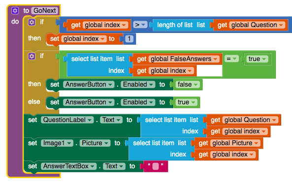

1. Describe your solution for the second project that added a Search button. Provide a SCREENSHOT of the search button click code that uses a complex algorithm with loops and lists. Why was a loop necessary?
Our solution for our second project of adding a serch button was using a loop for the "length of global questions" then it connected to an if then box which included "if it contains text of any question in the SearchBox, then set the global index to be that question" this then includes the question, picture and answer. This loop is necessary because app needs to cycle/search through each question to see if anything in each question contains anything in your search box.
2. Write AP text-style pseudocode for a linear search that searches through a list to find an item x. It should display found if the x is equal to an item in the list.
x = equal item on list
Repeat N times
If item on list contains X then display found
3. Give brief descriptions of the enhancements you added to your app for the third project, a quiz topic of your own choosing. Provide SCREENSHOTS of important blocks and describe how you used them to solve certain programming problems.
Our enhancement we included to our app is shake to reset app and text to speech, we added shake to reset because after finishing our quiz you may not answer again to score points so if you want to play the game then you'll have to reset the app. We also added text to speech because we thought that reset app through shaking was lame so having someone speak to you when you answer something incorrect or correct made out app different. Our topic we chose for our app was wildfires. We chose this topic because of the recent wildfires in australia and we wanted people to understand how scary and how these wildfires are effecting us. Important blocks in our app were the "goNext" block, this block was important because without this block our questions, pictures, and answers would not display.
4. To practice for the Create project prompt, grab a SCREENSHOT of a program code segment from your project that implements an algorithm that includes two or more algorithms within it and includes mathematical and/or logical concepts. An ideal algorithm is a procedure that you created that includes calls to other procedures that you created, where at least one of those includes math or logic (ifs or loops). Describe how each of the two algorithms within the bigger algorithm functions independently as well as in combination to form a new algorithm. Basically, answer 2c!
The algorithm I selected was the goNext procedure and our AnswerButton. In the goNext procedure, the algorithm performs an abstraction that simplifies our scoring, as well as moving down the list of questions and pictures. The global index is set to 1, and once the globalFalseAnswer becomes “true”, then the answer button which has initially been Enabled, will be set to “false”, disabling it. This helps prevent scoring complications with the user and allows them to move forward with the next question on the list. With the AnswerButton, the algorithm compares the response in the textbox and the list of answers from the global index. If those two are the same, then the global score will increase by a factor of 1 and a CorrectLabel Text will appear informing the user that they got the question right. Otherwise if it doesn’t match, then the CorrectLabel Text will appear informing the user that they got the question wrong. In addition, it will also display the correct answer.
1. Present the results and the analysis you did for each of the experiments in this lesson, -- i.e., the table of running times you observed, the graphs you created, and the conclusions you reached regarding the searching algorithms and sorting algorithms. Provide a clear description, referring to your graphs and your tabulated data (which are included, or linked to), to explain how you arrived at your conclusions.
For Sorting we believed Search 1 Runtime is Linear Search because it takes longer for it to search through all the numbers, while search 2 Runtime would be Binary Search because it is faster at searching through these numbers.
For Searching we believed Sort 2 Runtime is Merge Sort because it was the fastest sorting algorithm, Sort 1 Runtime is Bubble Sort because it is the slowst sorting method, and Sort 3 Runtime would be Bucket Sort because it isnt as fast as sorting as merge but it isnt as slow of sorting as bubble.
1. (POGIL) A password scheme consists of a minimum password length and the different types of symbols (i.e., letters, numbers, specials) that can be used in the password. Using the Password Strength Calculator, determine the optimal scheme for withstanding a brute force attack of at least 10 years by an ordinary PC performing 100 million tests per second.
With all the symbols number lower and upper case letters, with the length of eight, it takes 22.9 years to crack out the password.
2. (POGIL) According to this 2012 article, a password-cracking computer can try 350 billion passwords per second. How would you have to modify your scheme to withstand a 10-year attack by this specially designed computer?
I would modify our scheme to withstand a 10-year attack by this specially designed computer by adding special characters in our scheme.
3. (POGIL) That article was written in 2012. Password cracking technology has probably gotten a lot better. Suppose the number of passwords that can be checked per second doubles every year, use the Password Strength Calculator to determine an optimal password scheme for the year 2020?
It has to have a length of 11 and with uppercase lowercase and special keyboard character,to make the password safe for 86 years.
4. (POGIL) For the routes starting and ending at Trinity College, identify the nearest neighbor route and the optimal route. What does this show you about the nearest neighbor heuristic?
This shows us that the nearest neighbor heuristic are similar because they both search for the most efficient way to get the proposed destination.
1. How do web search tools make it more efficient to find information?
Web search tools make it more efficent to find information by growing(storing information) their index everytime someone searches something up. For example if someone searched up something not in their index then they'll add that something onto their index so next time when someone searches that topic again they'll have it due to the index storing.
2. When you type a word or phrase into the Google search engine, what is the search algorithm that is being used? Explain in your own words the process used by Google's search engine.
The search algorthim being used is by Google is PageRank. Google's search engine ranks pages based on the importance of the website and the things you are looking for. Google looks at the keywords you search up and it recieves data form their index and puts it out on page for the viewer to see.
3. What is a captcha? How has the collective efforts of Internet users contributed to analyzing images through captchas?
Captcha is a system used to distinguish between human from machine using images. Collective efforts of Internet users have contributed to analyzing images through captcha's by looking at the image and answering these captcha to enter to their website they want to visit.
4. "The architecture of human knowledge has changed as a result of search." Do you agree? Explain your reasoning.
I agree, many people now rely on searching Google for their answers because it is "convenient" and once you search for anything all the information you are looking for is there in one page. This has made many younger people depended on Google searching anything they need instead of learning it themselfs making humans less knowlegabl.
5. What are the differences between Figures 4.10 and Figure 4.11 in the book? Why are there differences even though they are both a Google search results page?
The difference between 4.10 & 4.11 in the book is that Google in the United States give back information that is not tampered with like everyone has their own opinion but Google in China messes with their information due to chinese goverment control, so any information given out is based on what the chinese goverment believes. There are differences because every country has their own search index, also because every country has their own opinions and thoughts that may not be the same due to things like their goverment.
6. How do you think mobile computing might have influenced web searches?
I think mobile computing has influenced web searches by being able to search anything at anytime. Also, everything is so simple and easy to get to unlike before mobile computing, people would have to go to places like the library to retrieve their information.
7. Would you retain your search history or delete it? Why?
I would delete my search history because I believe it takes up storage in my computer even though it barely does. Also because I do not need the information after I already visited the website so there is no point of retaining the information.
8. Should a researcher place absolute trust in a search engine? Why or why not?
I do not think that researcher should place absolute trust on search engines because not every website has true or unbias information. Some websites put up false information for views and clicks which may make readers believe that they are true.
9. The authors claim "search is a new form of control over information" (p. 111) and "search is power" (p. 145). Why might it be important to talk about the social implications of searching on the Internet?
I think it is important to talk about the social implications of searching on the Internet because everyone in the world(mostly) has access to the internet. Many people forget that behind the screen are real people that are posting things, they do not understand how this power has effected people like teenagers and how some information posted can effect them like fake news or bias work, or negativity, etc.
10. How have search trends been used to predict information? What are the positive and negative impacts of using trends to make predictions?
Search trends have been used to predict information by giving out information needed to people like right now our search trends is the coronavirus, so they would give out information about the sympthoms of Corona or how to prevent Corona. The postive and negatives of using search trends to make predictions are the information given to you may not be true or unbias, the postives is that you get this information you may want to know about.
11. Find and read an article about web searches or algorithms. Write a 3-4 paragraph summary of the article. Include the author's name, the title of the article, the date it was published, and a link to the article.
Link to ArticleMy article is called "How Google's Algorithm Rules the Web, it was published by Steven Levy on WIRED. The publication date of this article is Febuary 22, 2010. This article discusses about how they can add features and improvements onto the Google's search engine to make it more powerful. The cool thing about this article is it talks about the Google in Mountain View, California. This is cool to me because I had opportunity to go there and go on a tour in that Google Headquarter.
This article also talks about how google is a big search engine and how it already "dominates" majority of the market shares of Search. Although Google is a big part of Search other companines try to create a "messier future of Search" by being able to do things in these apps like Facebook or Twitter, or yelp, etc. They talked about how they are not dominated by one search engine but by many other servies like being able to look at pictures and reviews of food places or seeing links shared by friends on Facebook or Twitter. Google wants to keep their single search engine up to date by adding features that enchance it but keeping it simple.
This article also talks about how other single search engines try to compete against Google by teaming up with big companies like Microsoft. Other single search engines like Bing and Yahoo competes against Google by exeling in other ways. For Bing they used Microsofts equipment like their Farecast Software which tracks ticket prices of airlines and when it drops or increases, so if you are ever searching for cheap plane tickets Bing would be a better search engine than Google. This is how smaller single search engines compete against Google, by exeling in other ways. This articles has many facts about how Google is better than any other search engine available in the web right now and I know when you get a new laptop or computer the first thing you download is Chrome. (This is how you know Google is dominating every other search engines)